신승갤러리 > 사진·영상 갤러리
앨범을 누르면 사진을 크게 볼 수 있습니다. 옆으로 밀거나 ‹ › 단추로 다음 사진을 봅니다.
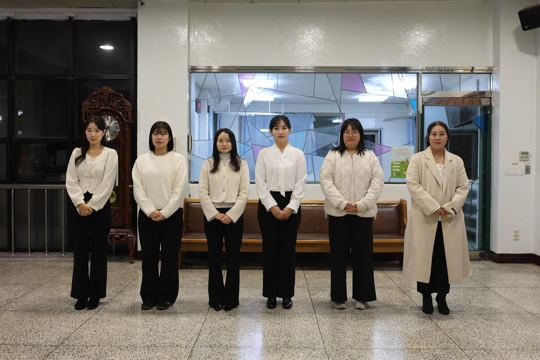
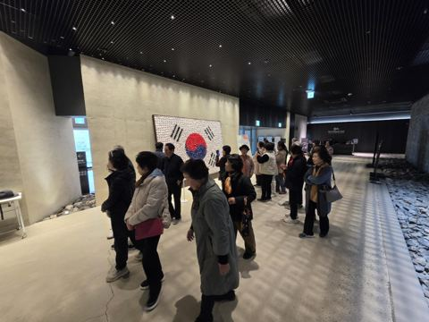
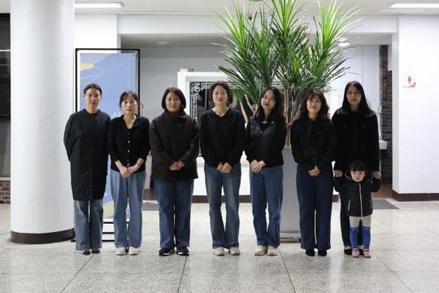
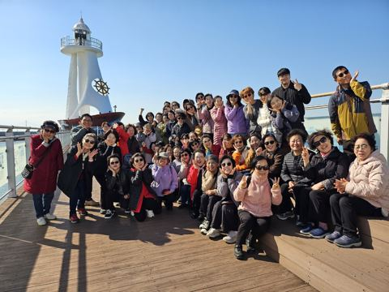
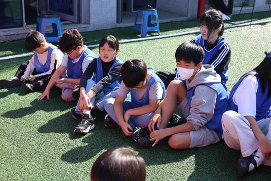
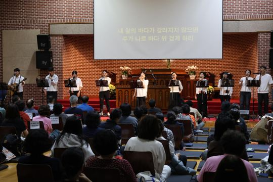
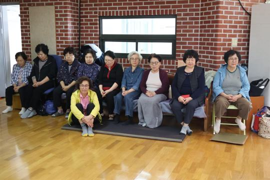
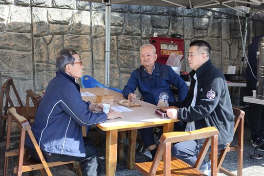
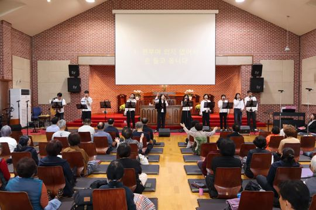
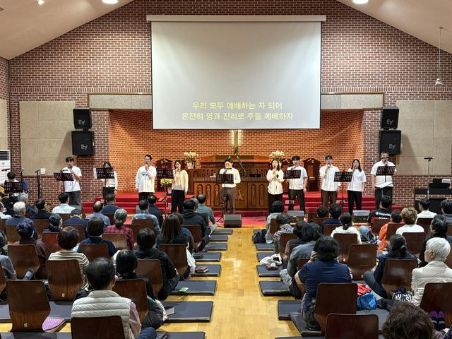
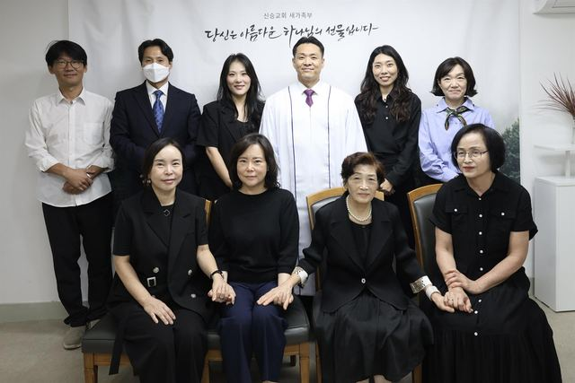
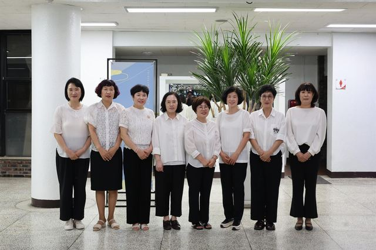
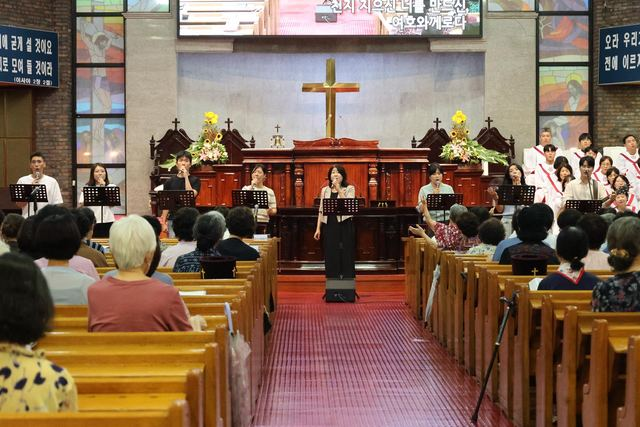
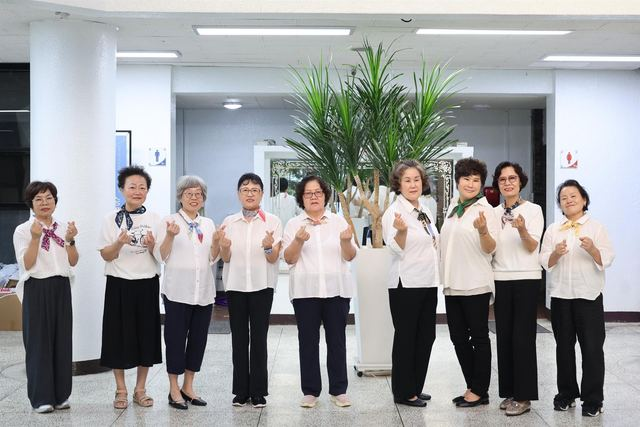
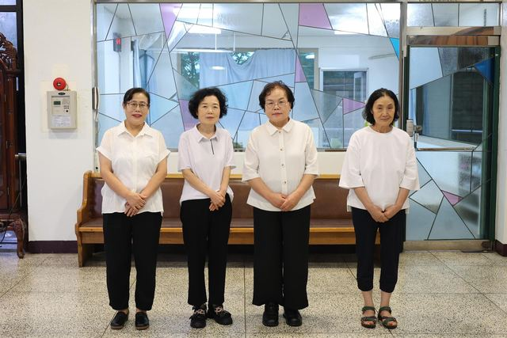
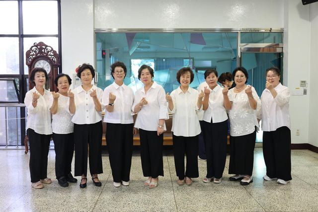
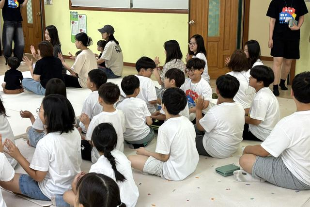
앨범마다 사진을 12장까지 보여 드립니다. 크게 보기 창 아래 “이 앨범 전체 보기”를 누르면 앨범의 모든 사진을 볼 수 있습니다.
사진 갤러리 전체 보기 ↗
교회 행사 영상과 예배 영상입니다. 예배 영상은 유튜브 신승교회 채널에 모두 있습니다.